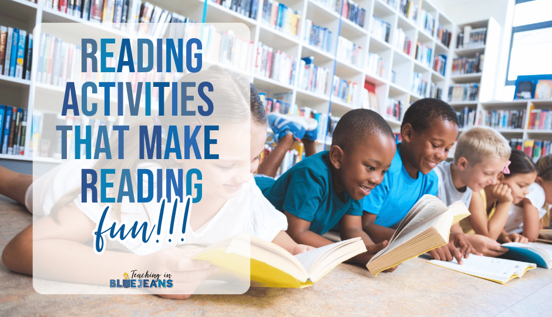

Language & Literacy in Early Childhood
Importance of Language & Literacy
- Enhances communication skills and social interaction.
- Develops cognitive abilities and critical thinking.
- Improves vocabulary and comprehension skills.
- Fosters a love for reading and storytelling.

Activities for Language Development
- Storytelling and reading sessions.
- Interactive rhymes and song activities.
- Word games and flashcards.
- Writing and drawing exercises.
- Word games and flashcards.
- Writing and drawing exercises.